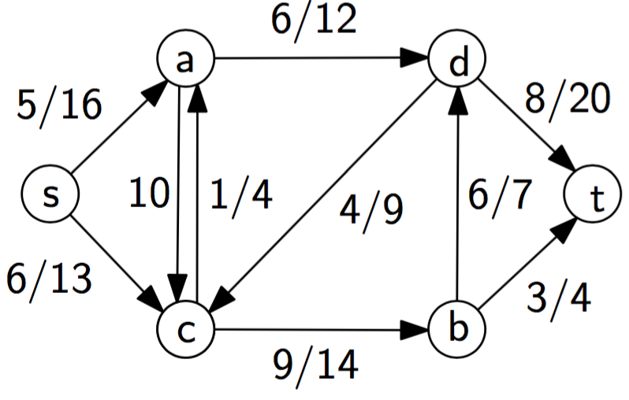

最大流问题中最典型的问题原型是：
你有一堆货物需要从出发点(sourse, s)运输到目的地(sink, t)，你可以在运输网络中(有向图，direct graph, network)沿很多不同的渠道(edge in graph)运输，但每一种渠道都有最大的运输量限制(each each has its capacity)。最终需要求出你最多可以运输多少货物到目的地(get the maximum flow)。
concept
每一条边edge(u,v)都有它对应的固定容量(capacity)，用c(u,v)表示，指在这条路上运输量的上限。而实际上运输的量就是流(flow)，用f(u,v)表示。0 <= f(u,v) <= c(u,v)。
规定
(1)f(u,u) = 0。
(2)就算edge(u,v)不存在，f(u,v)也存在，且可以是负数。这是为了方便后面的计算。
(3)用Σvf(u,v)表示所有从u流出的流的总和。除了s和t，所有点u都满足Σvf(u,v) = 0，即所有货物都不会在所有中继点停留，所有点的流入和流出量是一样的。
(4)从s流出的量和向t流入的量是一样的。
(5)f(u,v) = -f(v,u)，即：u发送x单位的货物到v，等价于u收到v发过来的-x单位的货物。
(6)表示：

对于每条边上的数字，/左边的是这条边的flow，/右边是capacity。如果只有一个数字，表示flow为0，数字为capacity。
Ford-Fulkerson’s algorithm
1.先令所有的flow(u,v) = 0。
2.不断地找从s到t的一个path(augment path)来使某些flow能增加，直到不能再增加为止。
最终找到的流就是maximum flow。